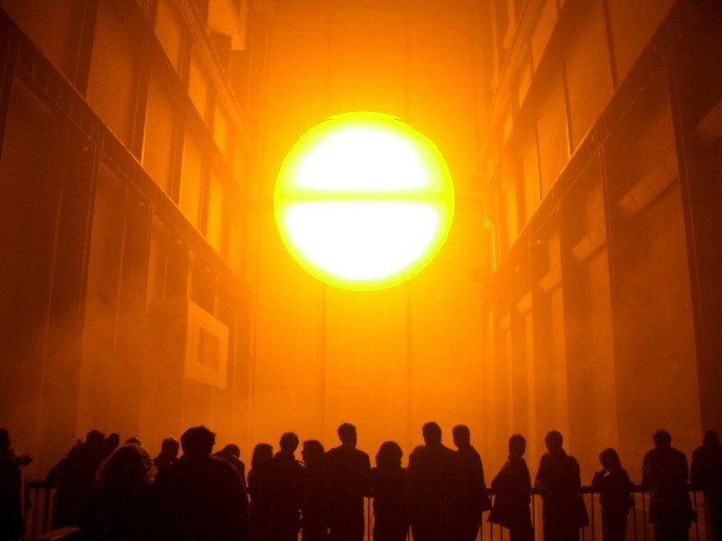
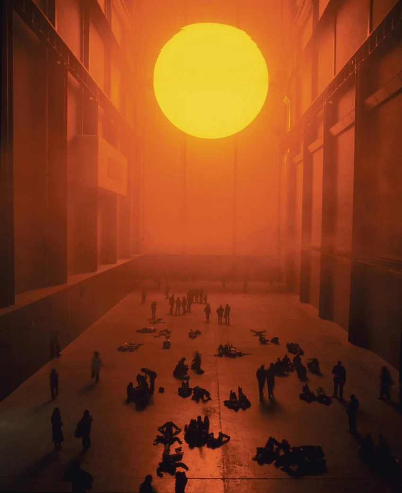
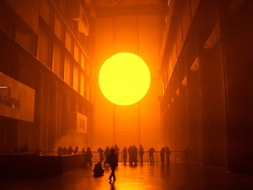
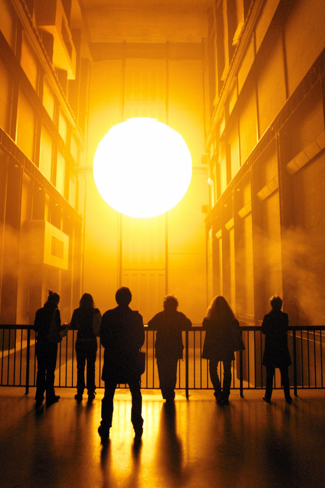

L’exposition présentée est une partie du « The Weather Project » dans le cadre des « Unilever Série s » en 2003. The Weather Project est une installation géante qui représente un grand soleil situé à l’Est du hall de la Tate Modern, musée d’art moderne à Londres. Il a suspendu un demi-disque d’une quinzaine de mètres de diamètre, illuminé par une grande quantité de lampes qui irradient une lumière suffisante pour que les visages des spectateurs soient éclairés ainsi que tout l’espace. Le plafond de ce lieu a été entièrement recouvert de miroirs et une brume créée par une fumée légère, froide est diffusée dans l’espace donnant une certaine irréalité à l’ensemble. Dans ce site dédié à l’art, Eliasson a fait la reconstruction d’un élément de la nature ici un coucher ou lever de soleil, évoquant chez les spectateurs des émotions diverses. La réaction du public face à cette installation est surprenante, certains contemplent ces phénomènes comme dans la nature, d’autres encore se couchent par terre et jouent avec les formes, et d’autres admirent leurs reflets la tête en bas et accèdent à un autre espace-temps.
   